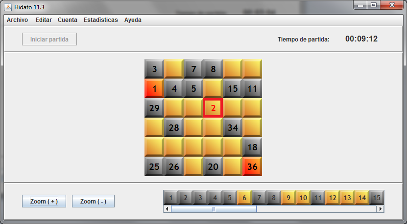

Con la partida ya iniciada, seleccione el menú 'Ayuda':

Seleccione 'Dar Pista':

Veamos cómo el sistema nos ha introducido aleatoriamente una casilla correcta, de entre todas las que estaban vacías:

Mientras no haya ninguna casilla colocada incorrectamente, cuando pidamos una pista el sistema nos rellenará aleatoriamente una casilla vacía, de forma correcta. Si hay casillas incorrectas, el sistema elegirá una de ellas aleatoriamente y nos la marcará en rojo:

Hay que tener en cuenta que en este último caso el sistema no tiene en cuenta las pistas que ya ha dado, por lo que puede que se marquen casillas incorrectas que ya se habían marcado anteriormente.
Cada pista que el usuario pida supondrá una penalización importante sobre la puntuación que finalmente obtendrá si resuelve el tablero.